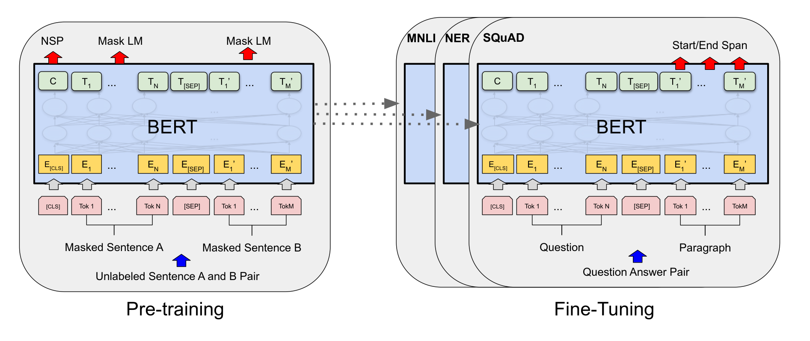
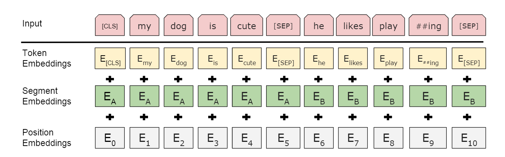

论文地址:BERT Pre-training of Deep Bidirectional Transformers for Language Understanding
摘要
本文提出BERT模型。BERT，即Bidirectional Encoder Representations from Transformers，对transformer进行双向编码表示。BERT把所有层的左右上下文连接起来，对未标签的文本做深层双向表示的预训练。BERT模型通过微调，只要添加一个输出层就能处理大量NLP任务，不需要对任务具体架构进行修改。
介绍
预训练语言模型被证明在多类NLP任务中有效，包含句子层面的任务例如自然语言推断和paraphrasing——通过分析句子整体判断他们的关联，token级别的任务例如命名实体识别和问答。
存在两种把预训练语言表示应用在下游任务的策略：基于特征，微调。
- 基于特征：
例如ELMo，使用任务具体架构，把预训练表示作为额外的特征 - 微调：
例如GPT，使用极少的任务具体元素，在下游任务训练时对所有参数微调。
这两种方法在预训练阶段有相同的目标函数，都是使用无向语言模型去学习广泛的语言表示。
本文认为当前技术限制了预训练表示的发挥，特别是对微调方式来说。主要限制表现为标准语言模型是无向的，这限制了预训练时可选用的结构。例如GPT使用从左到右的的结构，每个token只能在Transformer的自我注意力层添加。这样的限制对句子层面的任务来说不是最优的，并且对例如问答这样的token层面的任务做微调时有很大危害，对这样的任务来说文本的双向表示非常重要。
本文通过BERT改进微调。BERT使用“Masked Language Model（MLM）”来缓解无向的限制。MLM随机遮掩输入的一部分的token，并且依据现在的文本去预测遮掩的内容。MLM融合了左右文本，使得训练深层的双向Transformer称为可能。通过“预测下一个句子”任务链接预训练文本对的表示。文章主要贡献如下：
- 证明了对语言表示做双向预训练的重要性。BERT通过MLM实现对深层双向表示的预训练。
- 预训练表示减少了许多高度工程化任务对具体架构的需要。
- BERT取得了11项NLP任务的SOTA。
相关工作
基于特征的无监督方法
学习词的大范围可用表示是近十年的热点研究方向，有多种非神经网络方法和神经网络方法。预训练词嵌入显著提升了从头开始的嵌入学习。为了预训练词嵌入，提出了从左到右的语言模型，以及在左右上下文中区分正确和不正确的单词。
这些方法被推广到更粗的粒度，如句子嵌入和段落嵌入。为了训练句子表达，之前的研究是对候选的后文内容进行排名，给定一个前文句子的表达，从左往右生存下一个句子，或者降噪自动编码器。
ELMo和他的前辈在不同维度做传统词嵌入研究，在从左往右和从右往左模型提取文本敏感特征。每一个token的上下文表示是从左往右和从右往左表示的连结。也有提出从任务重学习上文稳表示，通过LSTM从左边和右边去预测单个单词的。和ELMo相似，这模型基于特征且非深度双向。后有研究表明完形填空可以被用途提升文本生成模型的健壮性。
无监督微调的方法
对于基于特诊过的方式，从无标签文本进行词嵌入，是最早的预训练的方式。
在近些时候，可以生成上下文token表示的句子或者文本编码器已经从无标签文本训练得到，在微调后用于有监督的下游任务。这些方法的有点在于，较少的参数需要从头开始学习。GPT模型在GLUE上实现了前SOTA。从左往右模型化和自动编码目标被用于预训练这类模型。
在有监督数据上转化学习
也有一些工作研究具备大数据集的有监督任务如何进行效率转化，例如自然语言推论和机器翻译。计算机视觉的研究正式了从大规模的预训练模型转化学习的重要性，一种思路是用ImageNet微调模型预训练。
BERT
BERT框架由两部分组成：预训练和微调。预训练期间，模型使用无标签数据在多种不同的预训练任务中训练。
对于微调，BERT模型首先用预训练参数初始化，通过下游任务的有标签数据微调所有的元素。每个下有任务都有独立的微调模型，虽然他们用相同的参数初始化。

如图所示的QA样例，除了输出层，预训练和微调程序有相同的整体结构。相同的预训练模型元素被用于初始化模型并用于不同的下游任务。在微调中，所有元素被微调。[CLS]是被添加在每个输入样例前的特殊符号，[SEP]是特殊的分离符号，表示中断，例如分离问题和答案。
BERT模型的显著特点是其用于不同任务的统一架构。预训练架构和最终用于处理下游任务的架构只有微小的差异。
模型架构
BERT模型的架构是基于Transformer原始实现的多层双向Transformer编码器，采用tensor2tensor库。
把层数（例如Transformer块）记作$L$，隐藏规模记作$H$，自我注意力头记作$A$。设计了两个模型规模，
- $BERT_{BASE}：L=12，H=768,A=12，Total Parameters=110M$
- $BERT_{LARGE}：L=24，H=1024,A=16，Total Parameters=340M$
BERT-base的规模和GPT一样大，但BERT使用双向自我注意力，GPT使用受限的自我注意力，每个token只能和它左边的文本相联结。
输入/输出表达
为了使BERT能处理大量下游任务，输入表示可以是单一的句子，也可以是一个token序列里的句子对（如<问题，答案>）。对于整个工作，“句子”可以是连续文本的任意块，不需要是确切的语言学意义的句子。“序列”指的是输入BERT的句子，可以是单个句子或者两个句子的组合。
BERT使用了WordPiece嵌入了30000个token的词表。每个序列的第一个token是特殊的类别token[CLS]。这个token对应的最终隐藏状态被用作分类任务的聚合序列表示。句子队聚合在一起形成单一的序列，用两种方式区分。首先用一个特殊token[SEP]分离他们，然后对每个token添加学习得到的嵌入，以表示他们属于句子A还是句子B。之前的图片里，把输入嵌入记为$E$，[CLS]对应的最终隐藏向量记作$C\in \mathbb{R}^H$，$i^{th}$对应的最终隐藏向量记作$T_i\in \mathbb{R}^H$。
对于一个给定的token，它的输入向量由对应的token、片段和位置嵌入累加构成。如图所示：

预训练BERT
没有适用传统的从左往右或者从右往左模型预训练BERT，是通过两个无监督任务来实现。
- 任务一：Masked LM（MLM），掩饰语言模型
随机遮掩一部分输入的token，然后预测遮掩的那些token。遮掩的token对应的最终隐藏向量被送到词汇表上的输出softmax。实验后选择在每个每个序列中随机遮掩15%。
尽管这样构成了一个双向预训练模型，但是存在一个缺点——制造了预训练和微调的错误匹配。因为[MASK]token在微调中不出现。为了缓和这个矛盾，对于被选择的token采取三种策略：- 80%的场合用[MASK]代替这个token。
- 10%的场合用另一个随机的token代替。
- 10%的场合不改变这个token。
任务二：Next Sentence Prediction（NSP），对下个句子的预测
为了训练模型理解句子间的关系，预训练一个二值化的NSP任务，该任务可以从任意单语语料库中轻易生成。具体来说，当为每个预训练示例选择句子A和B时，50%的时间B是A后面的实际句子(标记为IsNext)， 50%的时间它是语料库中的随机句子(标记为NotNext)。图1左上的C就被用于NSP。- NSP的形式如下所示：
Input = [CLS] the man went to [MASK] store [SEP]
he bought a gallon [MASK] milk [SEP]
Label = IsNext
Input = [CLS] the man went to [MASK] store [SEP]
penguin [MASK] are flight ##less birds [SEP]Label = NotNext
- NSP的形式如下所示：
BERT把左右元素转化，用于初始化端任务模型参数。
预训练数据
BERT的语料库是BooksCorpus（8亿词）和英语Wikipedia（25亿词）。对于Wikipedia，为了提取长连续句子，只提取文本文章，忽略列表、表格和标题。
微调BERT
Transformer中的自我注意机制可以通过交换适当的输入和输出来为许多下游任务建模，不管它们涉及单个文本还是文本对。对于涉及文本对的应用，一个常见的模式是在应用双向交叉注意前独立编码文本对。BERT利用自我注意力机制将这两个阶段统一起来，因为用自我注意力编码连接的文本对有效地包含了两个句子之间的双向交叉注意力。
对于每个任务，只需将特定于任务的输入和输出插入BERT中，然后端到端对所有参数进行微调。在输入方面，训练前的句子A和句子B类似于(1)意译时的句子对，(2)暗示时的假设-前提对，(3)问题回答时的问题-段落对，(4)文本分类或序列标记时的简并文本对。在输出处，令牌表示被送入输出层，用于执行令牌级别的任务，如序列标记或问题回答，而[CLS]表示被送入输出层，用于分类，如需要或情感分析。
对比预训练，微调的成本非常低。